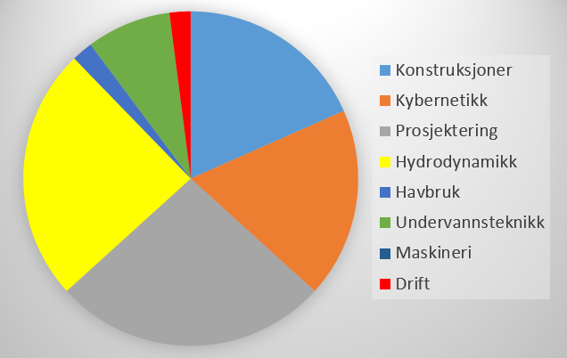
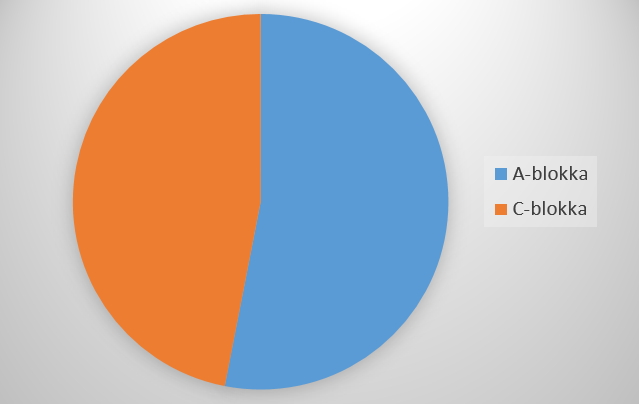
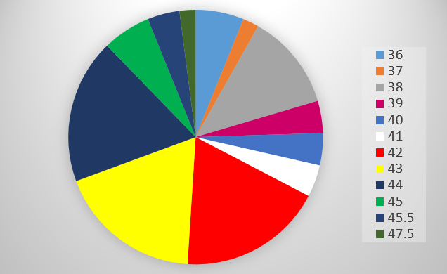
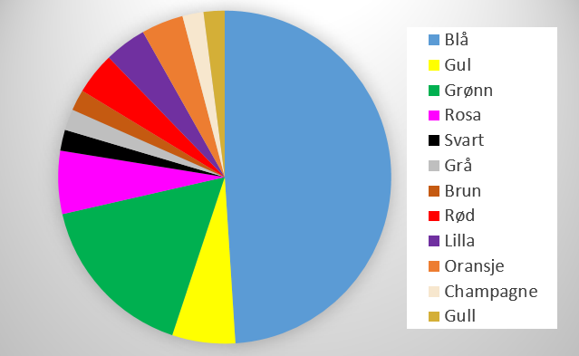

Job Statistics
Plot of the month: December

I månedens plot belyser vi i OH-Consulting korrelasjoner som den fjerde statsmakt pleier å overse. Oksholen, aka. kongen av korrelasjon, variansens hertug, Lord of Rayleigh, chi-squareds sorte belte, har i januarutgaven tatt for seg korrelasjonen mellom registrerte klamydiatilfeller i Norge og jobbmulighetene for marinstudenter. Det burde ikke komme som noe sjokk at marinstudenters fremtidsutsikter og registrerte klamydiatilfeller er kraftig korrelert. I januar, når befolkningen får somlet seg til legekontorene etter en aktiv julebordsesong, ser vi at den tidligere monotont synkende rapporteringen av klamydiatilfeller får en kraftig oppsving. Ettersom jobbsigneringene er negativt korrelert med klamydiatilfeller kan vi vente oss en kraftig nedtrapping i marinbransjens hyring. Dette er helt i tråd med hva gullprisene og Statoils aksjepris har indikert i de tidligere månedene. Godt nyttår, god tur til Åre, og lykke til med å holde Trondheims legekontorer travle i de kommmende ukene!
Hovedprofil
Hovedprofilfordelingen for de som har signert jobb til nå.
Kontorplasser
Statistikk over hvilken blokk vinnerne av årets jobblotteri sitter i. Denne statistikken er svært viktig for framtidige femteklassinger.
Skostørrelse
Skostørrelsefordelingen for de som har skaffet seg jobb.
Yndlingsfarge
Favorittfargen til de som har signert jobb.
Page views: